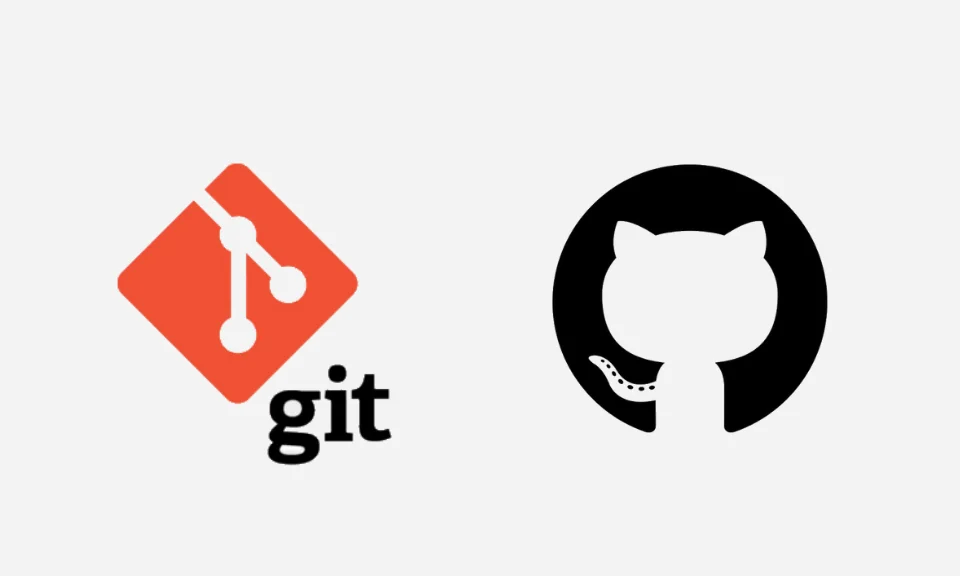

Alguns exemplos de tags são: head, body, h1-h6, label, button


VENHA APRENDER OQUE SÃO TAGS!
A tag serve como um marcador de texto, as tags devem sempre ser abertas e fechadas e podem ser conhcidas ambém como elementos.
Dentro das tags, há uma divisão para as tgs semânticas que fornecem um significado estrutural ao conteúdo. Em outras palavras, elas comunicam a função de uma determinada seção de conteúdo para os navegadores e mecanismos de busca. Isso é crucial, pois ajuda a criar uma hierarquia lógica e organizada, tornando o código mais legível e a página mais compreensível para os usuários.
header: Define o cabeçalho da página ou de uma seção.
nav: Representa a navegação do site.
main: Indica o conteúdo principal da página.
article: Usado para conteúdo autônomo, como posts de blog.
section: Divide o conteúdo em seções temáticas.
aside: Representa conteúdo relacionado, como barras laterais.
footer: Define o rodapé da página ou de uma seção.

Como funciona o CSS?
CSS é uma linguagem de estilo que define como os elementos de uma página web devem ser apresentados. A sigla CSS significa Cascading Style Sheets, ou Folha de Estilo em Cascatas.
Os atributos HTML "id" e "class" são usados para nomear elementos HTML. "Id" é usado para identificar um elemento único, enquanto "class" é usado para identificar um grupo de elementos.
Para chamar um ID no CSS, usa-se o símbolo # seguido do nome do ID.
Para chamar uma Classe no CSS, usa-se o ponto . seguido do nome da Classe.
Diferença de Margin, Padding e Border!
Utilizamos margin, ou margem, para dar espaçamento fora do conteúdo Já o padding, ou preenchimento, é utilizado para espaçamento dentro do conteúdo. O delimitante de do que fica dentro ou fora é a border.
Como ligar o CSS ao HTML?

Quais são as propiedades do Display?
Display-Flex
O Display-Flex permite que os elementos se alinhem e distribuam espaços entre si, ele permite que os elementos aumentem ou diminuam o tamanho, permite também crir designs adaptáveis - colocar ao lado.
Display-Grid
O Display-Grid é baseado em uma grade, com linhas E colunas - BIDIMENCIONAIS.
Display-Flexbox
O Display-FlexBox é baseado em uma grade, com linhas OU colunas - UNIDIMENCIONAIS.

Como funciona o Git e o GitHub
Git é uma ferramenta de controle de versões local podendo ser utilizada até em modo offline, o GitHub é uma plataforma online onde você pode hospedar os seus projetos e o Git Bash é um aplicativo para sistemas Windows que utiliza os mesmos comandos de versionamento do sistema utilizado no Mac ou no Linux. O Github é uma “rede social dev” em que é possível armazenar e compartilhar projetos de desenvolvimento de software, é uma plataforma baseada na web que incorpora os recursos de controle de versões do git para que possam ser usados colaborativamente.
PUSH Envia as alterações para um repositório remoto.
COMMIT Cria um novo commit com as alterações feitas.
PULL Obtém as alterações mais recentes de um repositório remoto.
ADD Adiciona arquivos ao índice do Git.
Quais são os paradgmas de linguagem?
Programação Funcional: Como passar ou retornar argumantos, aplicar função, armazenar valores e acumular rusultados.
Programação Imperativa: Funciona pelo passo - a -passo, fazer cadacoisa detalhadamente.
Programação Declarativa: Oque deve ser alcançado, declarar suas intenções.
Programação Orientada a Objetos: Cria objetos, encapsula dados e comportamentos e epresenta itens especiicos.

Oque é Position?
É o posicionmento relativo do elemento, ou, o elemento relativamente posicionado.
Alguns exemplos de posicionamento são: top, bottom, left, right
Os tipos de Position, é dado pela posição final definida pelos tipos de posicionamento, de progeção vertical e progeção horizontal.
Static: Funciona de acordo com o fluxo do documento, não possui efeito
Relative: Funciona de acordo com o fluxo do documento, em seguida é deslocado a si mesmo como base, não afeta outros elementos, o espaço dado pro elemento é o mesmo que fosse STATIC.
Absolute: É removida do fluxo normal do documento, nenhum espaço é criado, posicionado em relação ao seu ancestral mais próximo.
Fixed: É removida do fluxo normal do documento, nenhum espaço é criado, posicionado em relação ao bloco inical, eeto quando um ancestral tiver transform, pesperctive ou filer. O elemento é colocado no mesmo lugar em todas as páginas.
Sticy: É removida do fluxo normal do documento, é posicionada em relação ao seu ancestral mais próximo, sua localização não afeta outros elementos, gruda no ancestral com mecanismo de rolagem, mesmo que o ancestral não tenha o mecanismo

Oque é JavaScript?
Programação Funcional: Como passar ou retornar argumantos, aplicar função, armazenar valores e acumular rusultados.
Programação Imperativa: Funciona pelo passo - a -passo, fazer cadacoisa detalhadamente.
Variáveis: Let: Valores de varáveis que podem mudar. Const: Valores de variáveis que são constantes.
Oque são funções? São blocos de código que realizam uma tarefa específica.